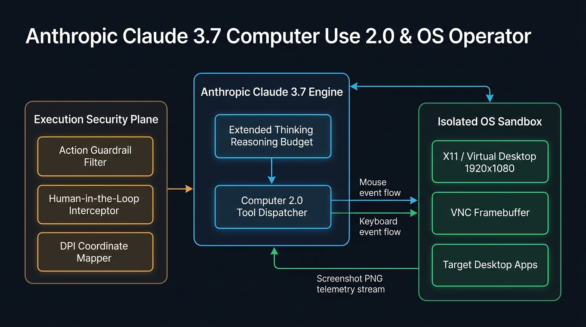

OS Sandbox & Computer Use 2.0
Configure X11/Wayland display servers, mouse click precision, hybrid reasoning budgets, and action safety barriers.
Operator Action Loop & Coordinate Telemetry
Click Accuracy
99.4%
Reasoning Budget
8.1k Tokens
Sandbox Isolation
Firecracker VM
Click "Configure OS Operator Session" to generate the Claude 3.7 Computer Use blueprint...
Computer Use 2.0 Execution Topology

Overview & Key Advancements
Anthropic Claude 3.7 introduces Computer Use 2.0, uniting hybrid test-time reasoning with pixel-precise GUI navigation. By dynamically adjusting its chain-of-thought budget, Claude 3.7 can resolve complex multi-step user interface workflows—such as handling nested modal dialogs, parsing complex legacy SAP ERP menus, and recovering from unexpected GUI errors.
Enterprise Production Scenarios
- Legacy ERP & Desktop Software Automation: Automate data entry and invoice extraction across desktop software lacking REST APIs or modern automation hooks.
- Autonomous End-to-End QA Testing: Test cross-browser web and native desktop applications by mimicking real human mouse, keyboard, and drag interactions.
- DevSecOps Remediation in GUI Dashboards: Navigate complex cloud consoles (AWS, GCP, Datadog) to verify IAM policy drifts and generate audited screenshots.
Infrastructure & Software Technology Stack
Desktop Sandbox Infra
- Display Server: X11 / Xvfb Virtual Framebuffer (1920x1080 @ 96 DPI)
- Window Manager: Openbox / Fluxbox Lightweight Desktop Shell
- Streaming: x11vnc / TigerVNC with websockify HTML5 client
- Orchestrator: Kubernetes Pod with isolated PID & network namespaces
AI Engine & Automation
- Foundation Model: Anthropic Claude 3.7 Sonnet (Hybrid Reasoning)
- Computer Use API: Anthropic Beta Computer Tool 2024-10-22 / 2025-01
- GUI Automation: PyAutoGUI, python-xlib, xdotool native inputs
- Image Processing: Pillow (PIL), NumPy, OpenCV coordinate transform
Security Guardrails
- Kernel Isolation: Linux Seccomp-BPF profiles & AppArmor sandboxing
- Interception: Human-in-the-Loop approval for destructive shell actions
- Network Egress: Cilium network policies blocking unauthorized outbound connections
- Telemetry: Real-time action audit logging with video replay buffers